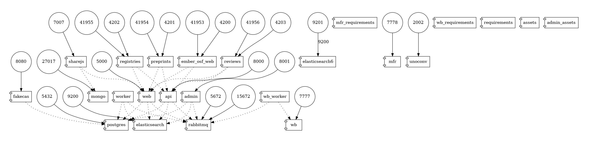
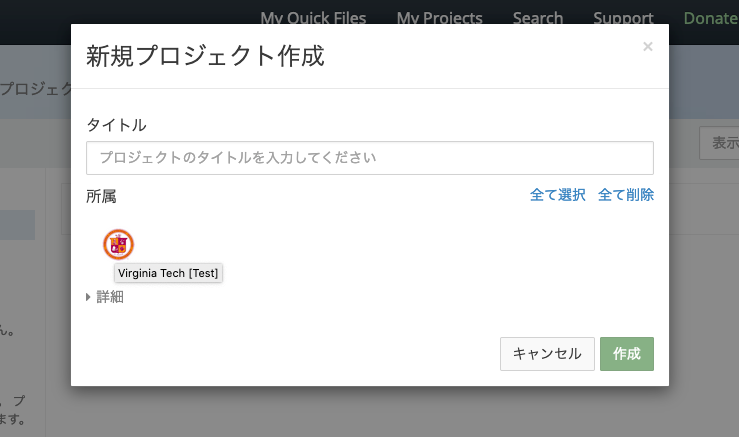

開発環境の準備¶
RDMは複数のマイクロサービスから構成されます。開発時にもこれらのサービスを動作させる必要がありますが、 1つ1つのサービスを自身のOSに合わせてインストールしようとすると非常に手間がかかります。
そのため、Docker Compose を用いて開発環境を構築する方法が RDM-osf.ioドキュメント にて説明されています。
Dockerを用いることで、OS等の環境の差異をコンテナにより吸収することができます。本ドキュメントでは README-docker-compose.md に補助的な説明を加えていきます。
サービスの構成¶
docker-compose.ymlに定義されているサービスは以下の通りです。

(Generated by https://github.com/pmsipilot/docker-compose-viz)
図中の円はポート番号, 矩形はサービスを示しています。 サービスは大きく分けて以下の5種類に分類できます。(括弧はインストールされるRCOSDP内リポジトリ)
- データ保存・共有サービス: postgres, elasticsearch, elasticsearch6, rabbitmq, mongo
- 基本サービス: web, api, admin, worker (RDM-osf.io), wb, wb_worker (RDM-waterbutler)
- UIサービス: ember_osf_web (RDM-ember-osf-web), mfr (RDM-modular-file-renderer), unoconv, registries, preprints, reviews, sharejs
- テスト用認証サービス: fakecas
- ユーティリティサービス: requirements (RDM-osf.io), mfr_requirements (RDM-modular-file-renderer), wb_requirements (RDM-waterbutler), assets, admin_assets (RDM-osf.io)
GRDMでは preprints, registries は使用しません。
基本的な流れ¶
- DockerとOSのセットアップ - https://github.com/RCOSDP/RDM-osf.io/blob/develop/README-docker-compose.md#docker-and-os-setup
- Docker Composeを利用可能にするためにDocker Engineを自身の環境にインストールします。
- RDMのサービス同士が互いに通信できるように、ループバックデバイスとして
192.168.168.167を設定します。 - ※注意: OSX ならびに Ubuntu については動作実績がありますが、Windows については動作が確認されていません。
- アプリケーションの設定 - https://github.com/RCOSDP/RDM-osf.io/blob/develop/README-docker-compose.md#application-configuration
- WebサーバとAPIサーバに関する、Djangoの設定ファイル
local.pyを準備します。特に変更の必要がなければ、それぞれのlocal-dist.pyをコピーして使用します。 - RDM-osf.io, RDM-waterbutlerリポジトリを使用するよう、Docker Composeサービス定義ファイルを変更します。
docker-compose.ymlを直接変更するのではなく、docker-compose.override.ymlを変更することで、誤って開発環境固有の情報をリポジトリにコミットすることを防止することができます。 - アプリケーションの実行 - https://github.com/RCOSDP/RDM-osf.io/blob/develop/README-docker-compose.md#application-runtime
- このDocker Compose環境は、Dockerイメージをベースに各サービスを起動しますが、PythonモジュールやNodeモジュールはイメージとは異なるボリュームに保持します。(開発中に更新される可能性を想定しているものと思われます。) そのため、サービス実行前に
docker compose up requirements mfr_requirements wb_requirementsを実施することで、必要なライブラリを各コンテナにインストールする必要があります。 - ツールの利用 - https://github.com/RCOSDP/RDM-osf.io/blob/develop/README-docker-compose.md#running-arbitrary-commands
- DjangoのMigrationファイルの作成や、RDMが保持するModelの確認、テストの実行など、Docker Compose経由でコマンドを実行することで、容易にこれらのコマンドを実行できます。
- 環境のリセット - https://github.com/RCOSDP/RDM-osf.io/blob/develop/README-docker-compose.md#cleanup--docker-reset
- Dockerを使うことで得られる恩恵の1つは、開発環境をいつでもリセットできるという点です。開発時の試行錯誤の副作用の蓄積を簡単にリセットし、動作確認を確実に行うことができます。
開発環境のカスタマイズ¶
初期状態では docker-compose.yml は quay.io/centerforopenscience/ からイメージを取得するようになっています。
GakuNin RDMの最新Docker Imageをベースに開発を行うには、これらのイメージを差し替える必要があります。以下の内容を docker-compose.override.yml に記述してください。
(docker-compose.yml と同じディレクトリに作成してください。)
# Apple Silicon搭載Macの場合、platform指定のコメントアウト部分を外してARM版イメージを使用してください。
services:
fakecas:
image: niicloudoperation/rdm-fakecas:latest
# platform: linux/arm64
# Apple Silicon搭載Macの場合、以下のコメントアウト部分を外してARM版Elasticsearchイメージを使用してください。
# elasticsearch:
# image: quay.io/centerforopenscience/elasticsearch:es6-arm-6.3.1
# platform: linux/arm64
admin:
image: niicloudoperation/rdm-osf.io:latest
# platform: linux/arm64
environment:
AWS_EC2_METADATA_DISABLED: "true"
admin_assets:
image: niicloudoperation/rdm-osf.io:latest
# platform: linux/arm64
api:
image: niicloudoperation/rdm-osf.io:latest
# platform: linux/arm64
assets:
image: niicloudoperation/rdm-osf.io:latest
# platform: linux/arm64
requirements:
image: niicloudoperation/rdm-osf.io:latest
# platform: linux/arm64
command:
- /bin/bash
- -c
- apk add --no-cache --virtual .build-deps build-base linux-headers python3-dev musl-dev libxml2-dev libxslt-dev postgresql-dev libffi-dev libpng-dev freetype-dev jpeg-dev &&
invoke requirements --all &&
(python3 -m compileall /usr/lib/python3.6 || true) &&
rm -Rf /python3.6/* &&
cp -Rf -p /usr/lib/python3.6 /
web:
image: niicloudoperation/rdm-osf.io:latest
# platform: linux/arm64
environment:
OAUTHLIB_INSECURE_TRANSPORT: '1'
# macOS 15.1.1以降の場合、5000ポートが使用されている場合があります。その場合は以下のコメントアウトをはずしてポートを変更してください。
# また、 `.docker-compose.env`, `.docker-compose.mfr.env`, `.docker-compose.wb.env` のポート指定 `:5000` にも同様の
# 変更を行ってください。
# ports: !override
# - 5001:5000
worker:
image: niicloudoperation/rdm-osf.io:latest
# platform: linux/arm64
ember_osf_web:
image: niicloudoperation/rdm-ember-osf-web:latest
# platform: linux/amd64
cas:
image: niicloudoperation/rdm-cas-overlay:latest
# platform: linux/amd64
mfr:
image: niicloudoperation/rdm-modular-file-renderer:latest
# platform: linux/amd64
# ローカルのRDM-modular-file-rendererを試したい場合
# volumes:
# - ../RDM-modular-file-renderer:/code
mfr_requirements:
image: niicloudoperation/rdm-modular-file-renderer:latest
# platform: linux/amd64
# ローカルのRDM-modular-file-rendererを試したい場合
# volumes:
# - ../RDM-modular-file-renderer:/code
wb:
image: niicloudoperation/rdm-waterbutler:latest
# platform: linux/arm64
# ローカルのRDM-waterbutlerを試したい場合
# volumes:
# - ../RDM-waterbutler:/code
wb_worker:
image: niicloudoperation/rdm-waterbutler:latest
# platform: linux/arm64
# ローカルのRDM-waterbutlerを試したい場合
# volumes:
# - ../RDM-waterbutler:/code
wb_requirements:
image: niicloudoperation/rdm-waterbutler:latest
# platform: linux/arm64
# ローカルのRDM-waterbutlerを試したい場合
# volumes:
# - ../RDM-waterbutler:/code
Apple Silicon搭載Macの場合、docker-compose.ymlのelasticsearchの制限に関するコメントアウト部分を外してください。
Elasticsearch は並列分散処理ができるクラスタ設計されており、複数ノードでの連携を前提としています。開発環境のような単一ノードでの利用の場合はクラスタ機能を使う必要がないため、この設定を行うことで「シングルノードモード」で動作させるように指定します。またElasticsearch は起動時に「bootstrap チェック」という一連のシステム環境の検証を行います。その一部に system call filter の設定確認が含まれており、これはセキュリティ向上のために OS レベルの制限（システムコールのフィルタリング）を利用する機能です。しかし、Docker や他のコンテナ環境ではこのチェックが原因で起動エラーとなることがあります。
ホスト側のデフォルトのulimit値がアプリケーションの要件を満たさない場合があるため、コンテナ内でのリソース制限を明示的に解除します。
elasticsearch:
image: elasticsearch:2
ports:
- 9200:9200
volumes:
- elasticsearch_data_vol:/usr/share/elasticsearch/data
# environment:
# - "ES_JAVA_OPTS=-Des.bootstrap.system_call_filter=false"
# ulimits:
# memlock:
# soft: -1
# hard: -1
stdin_open: true
# Temporary: Remove when we've upgraded to ES6
elasticsearch6:
image: docker.elastic.co/elasticsearch/elasticsearch:6.3.1
ports:
- 9201:9200
volumes:
- elasticsearch6_data_vol:/usr/share/elasticsearch/data
# environment:
# - "discovery.type=single-node"
# - "ES_JAVA_OPTS=-Des.bootstrap.system_call_filter=false"
# ulimits:
# memlock:
# soft: -1
# hard: -1
stdin_open: true
開発環境でRDMを起動する¶
サービスを起動する¶
Quickstart: Running all OSF services in the background に示されているように、以下のコマンドでサービスを実行することができます。
# ライブラリのインストール - 初回/ライブラリ定義変更時だけ必要
$ docker compose up requirements mfr_requirements wb_requirements
# DBのマイグレーション - 初回/DB定義変更時だけ必要
$ docker compose run --rm web python3 manage.py migrate
$ docker compose up -d assets admin_assets mfr wb wb_worker fakecas sharejs worker web api admin ember_osf_web
https://github.com/RCOSDP/RDM-osf.io/blob/develop/README-docker-compose.md では preprints, registries の起動について紹介していますが、GRDMでは preprints, registries は提供しないため無視してください。
シンプルな構成で起動する¶
動作確認したい内容に応じて、 mfr, admin_assets, admin, sharejs を除外することもできます。 例えば、fakecasで認証し、プロジェクト作成、ファイル管理を確認したいだけであれば、
# ライブラリのインストール - 初回/ライブラリ定義変更時だけ必要
$ docker compose up requirements wb_requirements
# DBのマイグレーション - 初回/DB定義変更時だけ必要
$ docker compose run --rm web python3 manage.py migrate
$ docker compose up -d assets wb wb_worker fakecas worker web api ember_osf_web
でも十分でしょう。docker compose psで異常終了しているサービスがいないことを確認します。
docker compose psの出力例は以下の通りです。docker compose up -dで指定したサービスがUpであることを確認します。
$ docker compose ps
Name Command State Ports
-------------------------------------------------------------------------------------------------------------------------------------------------------------------
rdm2-osfio_api_1 docker-entrypoint.sh invok ... Up 0.0.0.0:8000->8000/tcp
rdm2-osfio_assets_1 docker-entrypoint.sh invok ... Up
rdm2-osfio_elasticsearch_1 /docker-entrypoint.sh elas ... Up 0.0.0.0:9200->9200/tcp, 9300/tcp
rdm2-osfio_ember_osf_web_1 docker-entrypoint.sh /bin/ ... Up 0.0.0.0:41953->41953/tcp, 0.0.0.0:4200->4200/tcp
rdm2-osfio_fakecas_1 fakecas -host=0.0.0.0:8080 ... Up 0.0.0.0:8080->8080/tcp
rdm2-osfio_postgres_1 docker-entrypoint.sh /bin/ ... Up 0.0.0.0:5432->5432/tcp
rdm2-osfio_rabbitmq_1 docker-entrypoint.sh rabbi ... Up 15671/tcp, 0.0.0.0:15672->15672/tcp, 25672/tcp, 4369/tcp, 5671/tcp, 0.0.0.0:5672->5672/tcp
rdm2-osfio_requirements_1 docker-entrypoint.sh /bin/ ... Exit 0
rdm2-osfio_wb_1 invoke server Up 0.0.0.0:7777->7777/tcp
rdm2-osfio_wb_requirements_1 /bin/bash -c invoke instal ... Exit 0
rdm2-osfio_wb_worker_1 invoke celery Up 7777/tcp
rdm2-osfio_web_1 docker-entrypoint.sh invok ... Up 0.0.0.0:5000->5000/tcp
rdm2-osfio_worker_1 docker-entrypoint.sh invok ... Up
cas-overlayを含む構成で起動する¶
fakecasは手軽にRDMの動作確認を行えますが、OAuthの動作確認などはできません。OAuthを用いたアプリケーションの開発時には、fakecasではなくcas-overlayを使ったテストが必要になります。このような場合、以下のようにfakecasの代わりに cas サービスを起動します。
# ライブラリのインストール - 初回/ライブラリ定義変更時だけ必要
$ docker compose up requirements wb_requirements
# DBのマイグレーション - 初回/DB定義変更時だけ必要
$ docker compose run --rm web python3 manage.py migrate
# fakecasではなくcasをサービスに指定する
$ docker compose up -d assets wb wb_worker cas worker web api ember_osf_web
# OAuthのスコープを登録する
$ docker compose run --rm web python3 -m scripts.register_oauth_scopes
casはfakecasとは異なり、ログイン時に ユーザ作成手順(後述) において入力したパスワードが必要になります。他の操作方法はfakecasと同様です。
Web UIを開く¶
サービスが起動したことを確認したら、 http://localhost:5000 にアクセスし動作を確認してみましょう。
ログは docker compose logs コマンドで確認できます。ember_osf_webコンテナは起動にある程度時間がかかりますが、この状態を確認するには、以下のコマンドを入力します。
$ docker compose logs -f ember_osf_web
...
Build successful (xxxxxms) – Serving on http://0.0.0.0:4200/
テスト用ユーザを作成する¶
http://localhost:5000 が正常に参照できたら、Sign Upを行いましょう。以下の手順で行います。
Sign Upボタンを押し、ユーザ登録画面を開く- ユーザ登録画面に適当なユーザ名、Eメールアドレスとパスワードを入力する
- デバッグログにEメール到達確認用のURL(
http://localhost:5000/confirm/xxxxx/xxxxxxxxxxxxxxxxxxxxxxxxxxxxxx/)が出力されるので、docker compose logs webで確認する
本番環境の場合はここでEメールアドレス宛に到達確認用のURLを含むメールが届きますが、SMTPサーバを指定していないのでメールは送信されません。
- 到達確認用のURLをブラウザでアクセスする
ブラウザはFirefoxを使用してください。Chromeの場合は、FakeCASとWeb UIの間でCookieが共有されず正常動作しない場合があります。
動作確認を実施する¶
これでユーザの作成は完了です。以降は、ログイン画面から、登録したEメールアドレスのみでログインできます。(開発用途に限定して利用してください。)
コマンドの実行例¶
ユニットテストを実行する¶
全てのユニットテストを実行するには、以下のようにコマンドを入力します。
requirements サービスによりテストに必要なライブラリがインストールされ、invoke testでテストが実行できます。
# 初回だけ必要
$ docker compose up requirements
$ docker compose run --rm web invoke test
テストコードを限定する方法は https://github.com/RCOSDP/RDM-osf.io/blob/develop/README-docker-compose.md#application-tests に記載されています。
Migrationファイルを作成する¶
RDM-osf.ioはDjangoアプリケーションとして実装されています。モデルの変更を行った場合、適切にデータベーススキーマに変更が反映されるよう、Migrationsファイルを作成する必要があります。
以下のコマンドを入力することで、Djangoの管理コマンド makemigrations を実行できます。
$ docker compose run --rm web python3 manage.py makemigrations
作成したMigrationsファイルは、以下のコマンドで postgresサービスに反映できます。
$ docker compose run --rm web python3 manage.py migrate
ユーザを機関に所属させる¶
機関に関する機能を試すためには、ユーザを機関に所属させる必要があります。 このような場合は、以下の手順を実施してください。
まず、実行中のRDMのデータベースに機関の情報を登録します。これは初回だけ必要です。
$ docker compose run --rm web python3 -m scripts.populate_institutions -e test -a
上記のコマンドを実行すると、Virginia Tech [Test] などの機関名を持つ機関が登録されます。
次に、shell機能を使って、ユーザに機関を紐付けます。以下のコマンドを実行します。
$ docker compose run --rm web invoke shell
上記コマンドを実行すると、以下のようなプロンプトが現れますので、Pythonスクリプトで処理を指示します。下記のようにスクリプトを実行すると、指定したEmailアドレスを持つユーザのモデルを取得することができます。
In[1]: user = OSFUser.objects.get(username='登録したEmailアドレス')
In [2]: user
Out[2]: <OSFUser('登録したEmailアドレス') with guid '登録されたユーザID'>
ユーザが所属する機関のリストは、user.affiliated_institutionsで管理されます。このリストに、先に登録した機関に対応するInstitutionオブジェクトを追加すると、ユーザを機関に所属させることができます。
# 機関名は例えば Virginia Tech [Test] 等: [i.name for i in Institution.objects.all()] で確認できる
In [4]: user.affiliated_institutions.add(Institution.objects.get(name='機関名'))
変数を編集したら、モデルに対してsaveメソッドを呼び出し、commitも忘れないようにしておきましょう。
In [5]: user.save()
In [6]: commit()
Transaction committed.
New transaction opened.
これでユーザを機関に所属させることができました。試しに、New Projectから新規プロジェクトの作成を実施してみましょう。所属のところに、Institutionで指定した機関が表示されます。

adminアクセス可能なユーザへと変更する¶
管理者機能は http://localhost:8001/ からアクセスすることができます。
ユーザがadminアクセス可能かどうかは is_staff プロパティで定義することができます。
is_staffの編集には、shell機能を使います。
$ docker compose run --rm web invoke shell
shellから以下のようにコマンドを実行することで、指定したユーザの is_staff プロパティを変更することができます。
In[1]: user = OSFUser.objects.get(username='登録したEmailアドレス')
In [2]: user
Out[2]: <OSFUser('登録したEmailアドレス') with guid '登録されたユーザID'>
In [3]: user.is_staff = True
In [4]: user.save()
In [5]: commit()
Transaction committed.
New transaction opened.